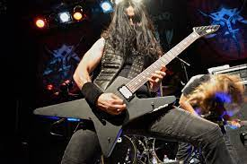
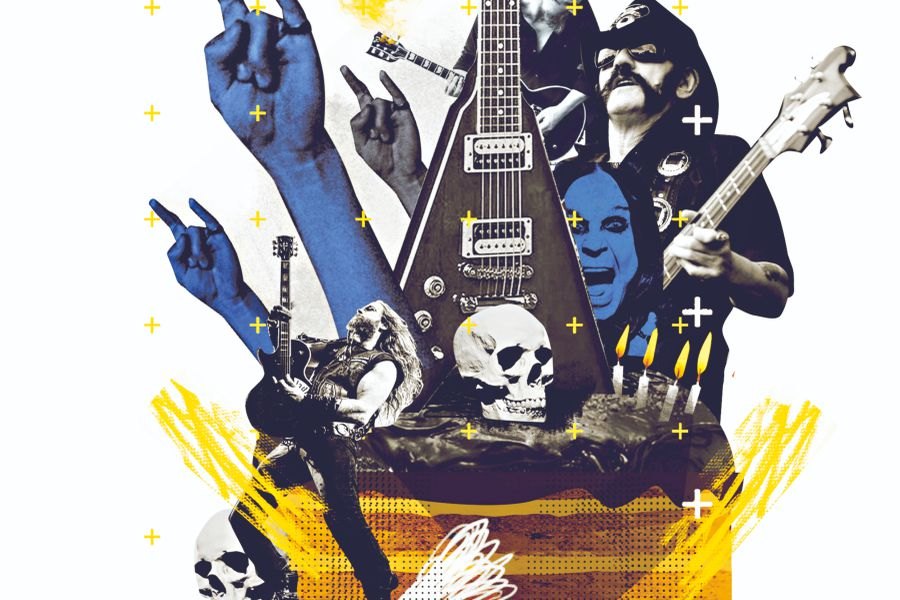
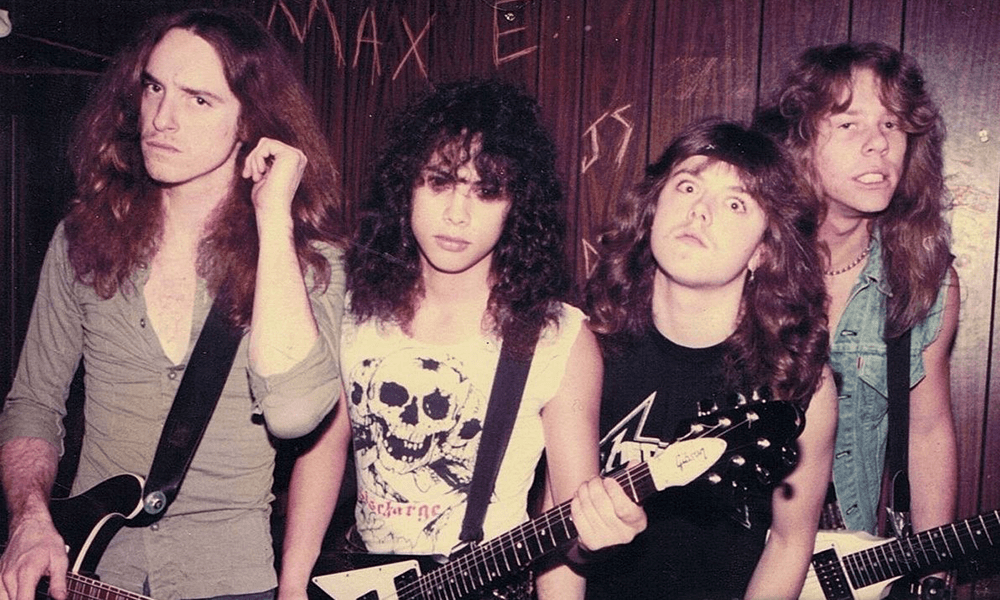

¿Qué es el Heavy Metal?
El heavy metal, o simplemente metal (pronunciado como métal)en español traducido literalmente como «metal pesado
es un género musical que nació a mediados de los años sesenta y principios de los setenta en el Reino Unido y también en los
Estados Unidos, cuyos orígenes provienen del blues rock, hard rock y del rock psicodélico. Se caracteriza principalmente por sus
guitarras fuertes y distorsionadas, ritmos enfáticos, los sonidos del bajo y la batería son más densos de lo habitual y la voz es
generalmente aguda o gutural.

Hasta el día de hoy no existe un consenso preciso que defina cuál fue la primera banda de heavy metal, algunos mencionan a Led
Zeppelin y Deep Purple, mientras que otros dejan ese sitial exclusivamente a Black Sabbath. Por aquel mismo tiempo, a finales
de los años 1960 y principios de los años 1970, surgieron muchas bandas que si bien no tuvieron el impacto mediático de las
mencionadas anteriormente, también fueron de gran aporte al nacimiento del género como Blue Cheer, Blue Öyster Cult, Sir Lord
Baltimore, Budgie, UFO y Wishbone Ash; posteriormente surgieron agrupaciones como Scorpions, Rainbow, Judas Priest (estos
últimos introdujeron la combinación del doble bombo con ritmos rápidos en semicorchea de bajo y guitarra, y eliminaron las últimas
influencias del blues) y Motörhead (quienes incluyeron algunos elementos del punk rock, dándole un nuevo énfasis a la agresividad
y velocidad).
Hasta el día de hoy el origen exacto de por qué se usa el término heavy metal en el ámbitomusical es desconocido. Lo que sí es
cierto es que durante varios siglos dicha frase se empleó en la química y en la metalurgia, y hace alusión a algunos elementos químicos
que poseen ciertas características en común (metal pesado). Uno de los primeros usos en la cultura popular ocurrió en 1961, cuando el escritor
estadounidense William Burroughs creó el personaje Uranian Willy: The Heavy Metal Kid en su novela The Soft Machine.
¿Origen?
Según el historiador de música Ian Christe su definición provendría del lenguaje hippie; heavy sería un sinónimo de potente o profundo y metal
describiría un estado de ánimo como la pesadez. En ese sentido la palabra heavy haría referencia a las bandas que tocaban con una amplificación
mayor a lo que interpretaba la música popular de mediados de los sesenta. En cuanto a su contexto musical las primeras referencias al heavy metal
sería el álbum debut de Iron Butterfly llamado precisamente Heavy, y su primer uso en las líricas de una canción sería en «Born to Be Wild» de los
estadounidenses Steppenwolf publicado en junio de 1968.
Por otro lado, el primer documento escrito que utilizó el término para identificar a un tipo de música rock apareció en una revisión de la revista
Rolling Stone, cuyo autor fue Barry Gifford. Dicha revisión se escribió el 11 de mayo de 1968 y trató sobre el disco A Long Time Comin' de la banda The

Electric Flag donde Gifford comentó: «Nadie que haya escuchado a Mike Bloomfield —como cantante o instrumentista— en los últimos años esperó algo como esto.
Esta es una nueva música soul, la síntesis del white soul y el rock heavy metal».
Desde un principio el heavy metal se caracterizó por poseer guitarras fuertes y distorsionadas, junto a ritmos enfáticos. Los sonidos del bajo y la batería
son más densos de lo habitual y las voces, generalmente, agudas. Con el pasar de los años y con el surgimiento de sus subgéneros dichas características se enfatizaron,
alteraron u omitieron, e incluso en ciertas ocasiones se agregaron nuevos atributos. Según el periodista Jon Pareles de New York Times: «En la taxonomía de la música popular,
el heavy metal es la mayor subespecie del hard rock. Eso si, con menos síncopa, menos blues, más talento para el espectáculo y fuerza más bruta». La típica formación de una
banda consta de un baterista, un bajista, un guitarrista líder, un guitarrista rítmico y un cantante que en ocasiones puede ser instrumentista. También puede incluir a un teclista
para engrosar el sonido en los conciertos en vivo o en las producciones de estudio, sin que este sea necesariamente un miembro activo de la agrupación.
El heavy metal se basa generalmente en el riff que es creado a partir de tres rasgos armónicos principales; progresiones de la escala modal, tritono y/o progresiones
cromáticas y el uso del pedal point. El heavy metal tradicional o también llamado clásico tendió a utilizar las escalas modales, en especial el modo eólico y el modo frigio,
que en términos prácticos y para dar un ejemplo sería (la, si, do, re, mi, fa, sol y la) y (fa, sol ♭, la ♭, si ♭, do, re ♭, mi ♭ y fa) respectivamente.
La necesidad del aumento de volumen provino de artistas como Cream, Jimmi Hendrix, The Who y en especial de Blue Cheer, que en palabras de su vocalista Dickie Peterson:
«Lo único que sabíamos era que queríamos más poder». Según el psicólogo Jeffrey Arnett en su libro Metalhead considera que el volumen de los conciertos es como «el equivalente
sensorial de la guerra». Por su parte, la doctora Weinstein aclara que es vital para cualquier banda de metal y además argumenta que: «...de la misma manera que la melodía es
el elemento principal del pop y el ritmo es el foco principal de la música house; el sonido, timbre y volumen potente son los puntos claves del heavy metal».